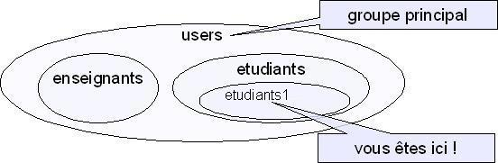

Les utilisateurs d'un système Linux sont groupés. Un groupe contient un ou plusieurs utilisateur(s) et un utilisateur appartient à un ou plusieurs groupe(s).
Sur Linux1,

La commande groups permet de connaitre tous les groupes auxquels l'utilisateur appartient.
Parmi tous les groupes d'un utilisateur, il y en a un qui est le groupe principal (c'est le premier donné par la commande groups). C'est celui qui sera utilisé par défaut lors de certaines opérations (par exemple, lors de la création d'un fichier)